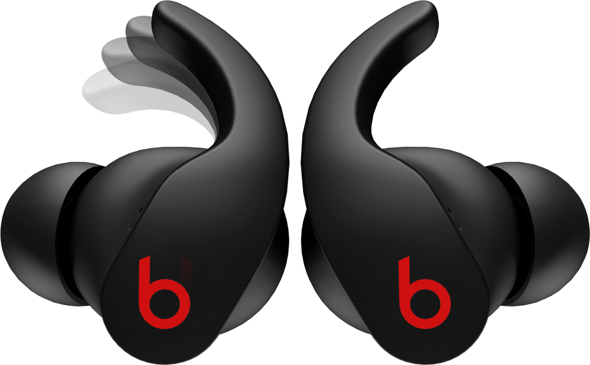

Beats Fit Pro est équipé d'embouts d'ailes confortables et sécurisés qui s'adaptent à votre
oreille. La conception universelle du bout d'aile a été mise à l'épreuve par des athlètes de
toutes sortes afin que vous puissiez être sûr que ces écouteurs resteront en place pendant
les journées de travail et les entraînements. Dotés d'évents anti-pression, vous pouvez
porter confortablement ces écouteurs tout au long de la journée.
Trois options d'embouts en silicone souple permettent de trouver facilement la bonne taille.
La configuration Fit Test1 pour Apple et Android permet de garantir un ajustement approprié
pour un joint acoustique personnalisé et des performances optimales.
Beats Fit Pro est conçu pour fournir un son puissant et équilibré via une plateforme
acoustique personnalisée qui vous accompagne tout au long de vos activités quotidiennes. Un
haut-parleur à membrane exclusif à double élément réside dans un boîtier à deux chambres, ce
qui donne un son clair avec une séparation stéréo exceptionnelle. Un processeur numérique
avancé optimise ensuite les performances audio pour le volume et la clarté, tout en assurant
simultanément une suppression nette du bruit.
Beats Fit Pro prend en charge Spatial Audio avec suivi dynamique de la tête pour une
musique, des films et des jeux immersifs2. Le suivi dynamique de la tête utilise des
gyroscopes et des accéléromètres pour ajuster le son lorsque vous tournez la tête, pour une
expérience multidimensionnelle qui vous donne l'impression d'être à l'intérieur.
Avec deux modes d'écoute distincts, vous contrôlez ce que vous entendez. La suppression
active du bruit (ANC) entièrement adaptative utilise un calibrage audio en temps réel pour
identifier en permanence les sons externes indésirables et optimiser la sortie sonore.
Lorsque vous avez besoin d'être conscient de votre environnement, passez facilement en mode
Transparence. Les microphones orientés vers l'extérieur capturent les sons environnementaux
et ambiants autour de vous pour les mélanger à votre musique. Désormais, vous pouvez
toujours choisir le mode d'écoute qui correspond à vos besoins.
Alimenté par la puce Apple H1, Beats Fit Pro est prêt à vous aider à gérer tout ce que la
journée vous réserve. Couplage instantané avec tous vos appareils Apple3. Lorsque vous
passez de votre iPhone à votre Mac ou iPad, la commutation automatique redirige votre
audio4. Le partage audio avec une autre paire d'écouteurs Beats (ou Apple AirPods) signifie
que vous pouvez facilement partager votre musique préférée avec tous vos amis5.
Les écouteurs ont jusqu'à 6 heures de temps d'écoute6 avec 18 heures supplémentaires
fournies par son étui de chargement de poche7. Cela signifie que Beats Fit Pro vous offre
jusqu'à 24 heures de lecture combinée. Avec le mode ANC ou Transparence désactivé, vous
obtiendrez jusqu'à 7 heures d'écoute. Si vous avez besoin d'un peu plus de jus, la charge
Fast Fuel de 5 minutes offre jusqu'à 1 heure de lecture8 lorsque la batterie est faible. Une
batterie qui dure ? C'est un coup de force.
Avec un accéléromètre intégré et la technologie Bluetooth® de classe 1, Beats Fit Pro peut
détecter quand vous parlez pour vous aider à donner le meilleur de vous-même. Deux
microphones à formation de faisceau localisent votre voix tandis qu'un processeur numérique
élimine le bruit extérieur et le vent, pour que votre voix soit claire et facile à
entendre.
Beats Fit Pro se connecte facilement aux appareils Android via Bluetooth® dès sa sortie de
l'emballage. Avec l'application Beats pour Android9, vous bénéficierez de fonctionnalités
améliorées telles que l'appairage en une seule touche, des commandes personnalisées, des
niveaux de batterie, des mises à jour du micrologiciel et un test d'ajustement pour vous
aider à obtenir le meilleur son et à adapter vos écouteurs.
 Pour
diffuser le son comme vous le souhaitez, le Solo Pro propose deux modes d'écoute :
Annulation active du bruit (ANC) et Transparence. Le mode ANC pure vous donne l'espace
nécessaire pour créer avec un son entièrement immersif, tandis que Transparence vous
aide à rester à l'écoute de votre environnement. Chaque détail de Solo Pro a été
soigneusement étudié, jusqu'à la manière intuitive dont le casque s'allume et s'éteint
via le pliage. Son design ergonomique offre un confort exceptionnel pour un port
prolongé et un style élégant. Avec une autonomie de 22 heures, vous pouvez continuer à
écouter de la musique où que vous soyez dans la journée.
Pour
diffuser le son comme vous le souhaitez, le Solo Pro propose deux modes d'écoute :
Annulation active du bruit (ANC) et Transparence. Le mode ANC pure vous donne l'espace
nécessaire pour créer avec un son entièrement immersif, tandis que Transparence vous
aide à rester à l'écoute de votre environnement. Chaque détail de Solo Pro a été
soigneusement étudié, jusqu'à la manière intuitive dont le casque s'allume et s'éteint
via le pliage. Son design ergonomique offre un confort exceptionnel pour un port
prolongé et un style élégant. Avec une autonomie de 22 heures, vous pouvez continuer à
écouter de la musique où que vous soyez dans la journée.